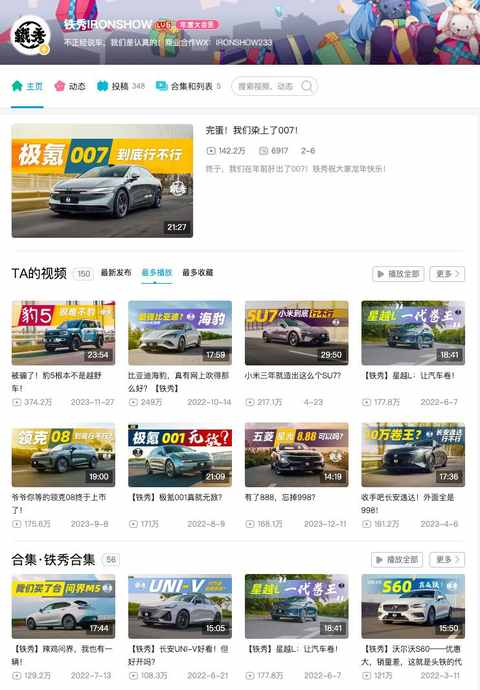
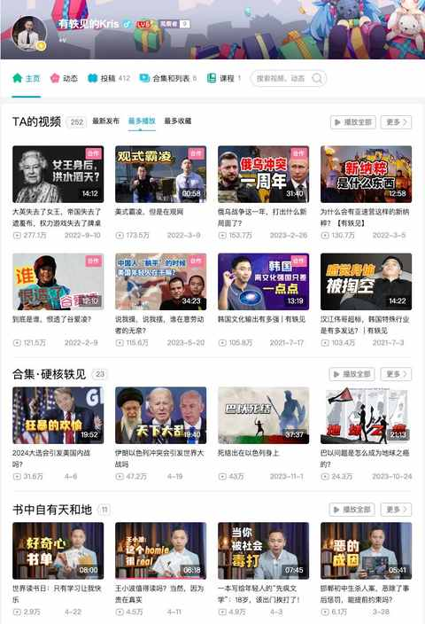
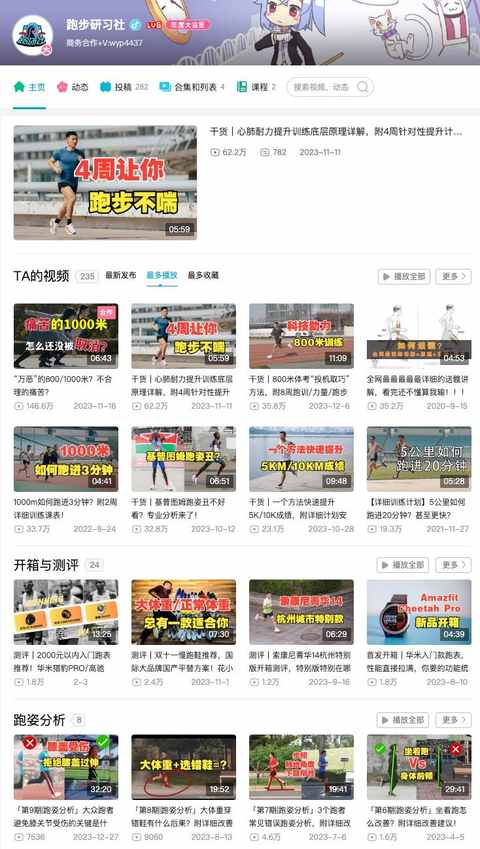
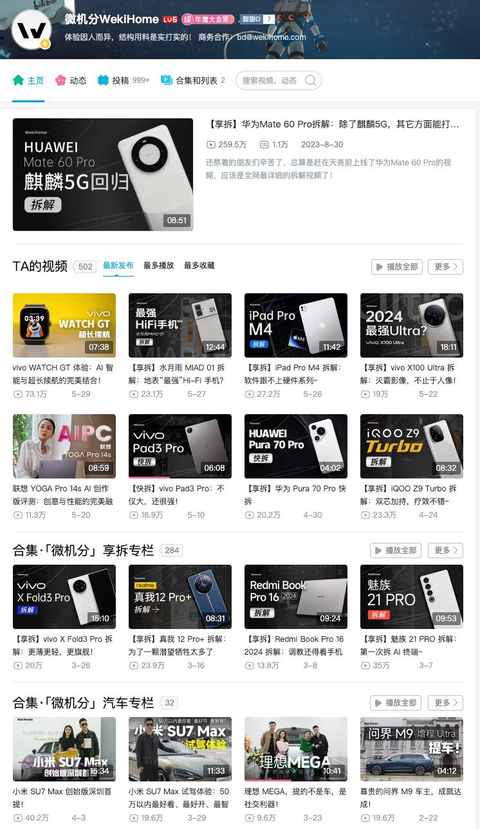
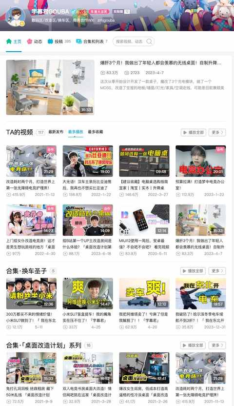

从关注列表的 451 名 up 主里，选出来 10 位宝藏 up 主推荐给大家！
1. 铁秀IRONSHOW
专业、有趣、有料的汽车区 up 主，会重点介绍关于驾驶体验的内容，每期视频都有多位卡司出镜，末尾都有关于车辆方面的 QA。

2. 有轶见的Kris
观察者网旗下的 up 主，聊的内容有时候涉及时政，有时是泛文化方面的，最近推荐图书比较多，能把深度的内容聊的很有趣，把有趣的内容聊的有深度，有犀利的观点输出但并没有什么中年男人的爹味。

3. 翻滚吧杰克
一位从小就比较胖后来通过科学饮食和锻炼瘦下来的 up 主，近期的内容都是聚焦减脂方面的，内容讲解深入浅出且很方便实操。
4. 跑步研习社
关于跑步的信息，更新的视频里面基本都有，关于 LSD 的概念就是看了一期视频之后领悟到的：想跑快之前，现增加每次跑步的时间和距离，积累有氧的跑 量。
关于各种科学训练的方案也是一大特色，会比自己各种找计划好很多。

5. 前进四放映室
较为硬核的影视区 up 主，关于不少经典电视剧都有特别完整的解读，小时候看的时候看不明白的地方，看完解读瞬间就能get 到要点。
除了解读影视剧，也会时不时追追时下热点，可谓是性情中人，不吐不快，另外他的充电视频出的比较频繁。
6. 李小冷不冷
探家类视频和探店类视频很大的不同是在于，探店基本是去吃吃喝喝玩玩，去别人家里是需要深入到其他人生活的场所去用心观察且还得能与屋主真诚互动的。
视频更新节奏不错，每一期都有充足的信息量和知识点可供学习与参考。
7. 微机分WekiHome
印象中这个账号改过好几次名字，好在改成微机分之后就不改了，前几年都是以手机的拆解视频为主，后面也加上了轻度的体验和评测，现在也会时不时有汽车方面的内容输出，数码博主果然都在进军车圈。

8. 字幕君GOUBA
是一位动手能力超强的 up 主，有不少桌面改造的经典案例，近几年也入坑了新能源车，从刚开始的比亚迪汉到阿维塔，再到最新的小米汽车。

9. 米焙食验室
如果你也爱吃面包甜品之类的产品，那么这个账号就不容错过，在看的过程中能感受到两位主理人对烘焙的热爱和对尝试产品评判的严格，当然啦有多严格，就看产品有多贵，另外在淘宝也是有同名店铺，出品买过也是不错的。
10. 万能工具人阿伟
作为林大厨爱徒的阿伟，是真的想教会大家做菜，每一期视频大概 10-15 分钟的时间里面，他恨不得教会大家毕生所学，主打的都是家常菜，偶尔会有一些相对费时费力的菜品。